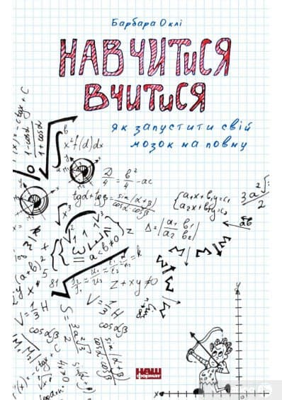
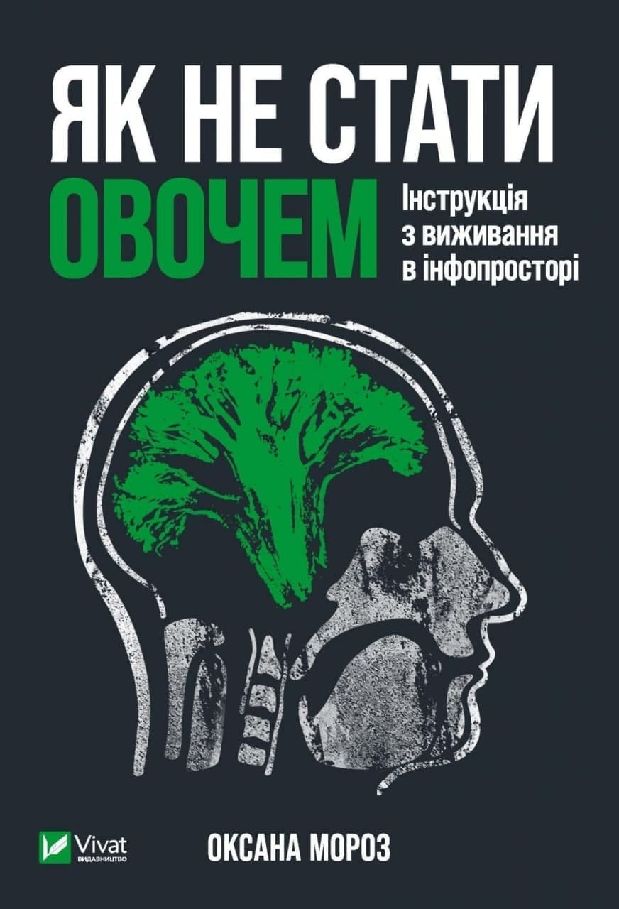
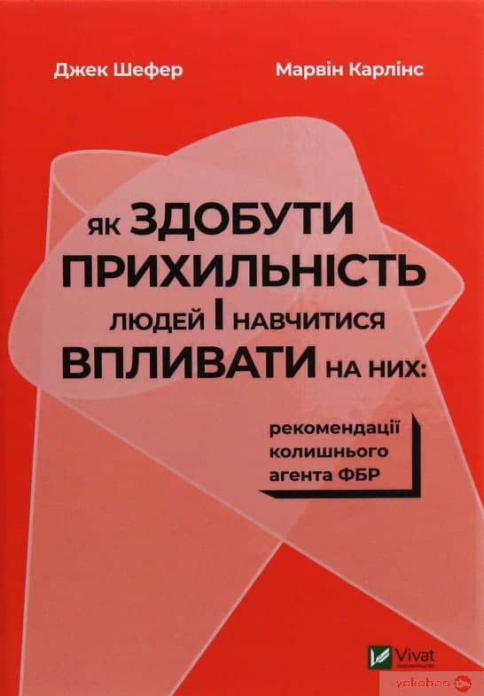
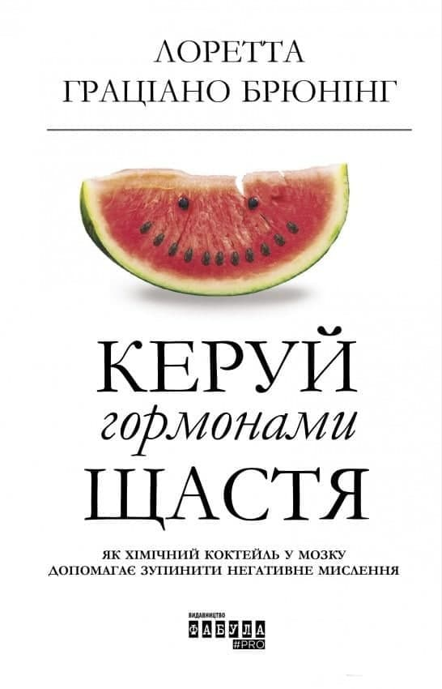
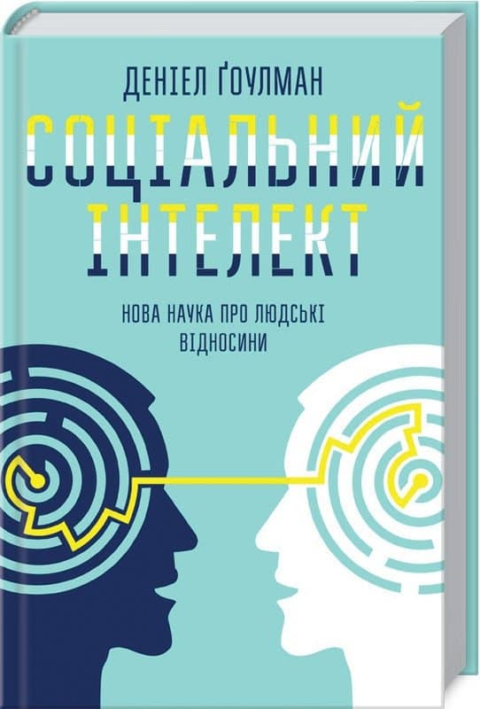

Бібліотека
Урядовий контактний центр, 2022 рік
Бібліотека електронних книг
-

Навчитися вчитися – Барбара Оклі
📖Ви математик чи гуманітарій? Професорка Барбара Оклі переконує, що таких понять не існує. Кожен із нас має внутрішній потенціал, щоб засвоїти будь-які знання. Головне — навчитися вчитися й запустити свій мозок на повну. Навіть більше, одноманітний і цілеспрямований рух до розв’язання проблеми — не завжди найкращий шлях. Інколи варто зробити крок назад, щоб поглянути на завдання з іншого боку, запустити свою креативність, навіть якщо ви працюєте над розв’язанням математичної задачі.
Натисни тут, щоб завантажити -

Оксана Мороз - Як не стати овочем. Інструкція з виживання в інфопросторі
📖Як часто вам здається, що вас дурять в інтернеті? Або ви усвідомлюєте, що це маніпуляція чи шахрайство, проте не розумієте, навіщо й кому вона потрібна? Facebook-тест “Який святий тобою опікується”, повідомлення “Завтра Viber буде платним — перешли це далі і для тебе він залишиться безкоштовним”, прохання “Перешліть це повідомлення, і ми перерахуємо 1 цент на лікування” та ще тисячі інших варіантів мають одну мету — обманути вас. У книжці “Як не стати овочем. Інструкція з виживання в інфопросторі” зібрані основні маніпуляції та шахрайства цифрового світу у форматі “суть — причина — наслідки — що робити”. Простою мовою на конкретних прикладах.
Натисни тут, щоб завантажити -

Як здобути прихильність людей і навчитися впливати на них - Марвін Карлінс, Джек Шафер
📖Агенту ФБР Джекові Шеферу доводилося користуватися незвичайними стратегіями для ефективної взаємодії з оточенням, зокрема зі шпигунами та злочинцями. Протягом двадцяти років фахівець із поведінкового аналізу розробляв оригінальні методи впливу на людей. Він наголошує, що ці стратегії придатні й для повсякденного життя: щоб побудувати міцні стосунки, навчитись розпізнавати брехню і розуміти поведінку інших. Чудові поради колишнього агента ФБР допоможуть керівникам, досвідченим менеджерам і продавцям-початківцям, батькам і вчителям, а також усім, хто прагне налагодити дружні чи романтичні стосунки й опанувати надскладне мистецтво подобатися людям з першого погляду.
Натисни тут, щоб завантажити -

Керуй гормонами щастя — Лоретта Граціано Брюнінг
📖 Ця книга покаже вам, як «перепрошити» свій мозок і активувати ті гормони, які роблять вас щасливим. Крім того, ви дізнаєтеся, як формувати нові звички і запускати дію «гормонів щастя», змінюючи нейронні шляхи. У цьому вам допоможуть десятки вправ з книги.
Натисни тут, щоб завантажити -

Соціальний інтелект.Нова наука про людські відносини - Деніел Гоулман
📖Ми запрограмовані на зв’язок. Точніше — наш мозок. Під час спілкування він починає емоційне танго та наче перетворюється на телефон, з якого ми дзвонимо на інший мозок. Такий зв’язок — палиця з двома кінцями: живильні стосунки мають корисний вплив на здоров’я, тоді як токсичні можуть повільно отруювати наш організм.
Натисни тут, щоб завантажити
{kind=link}
{kind=link}
{kind=link}
{kind=link}
{kind=link}